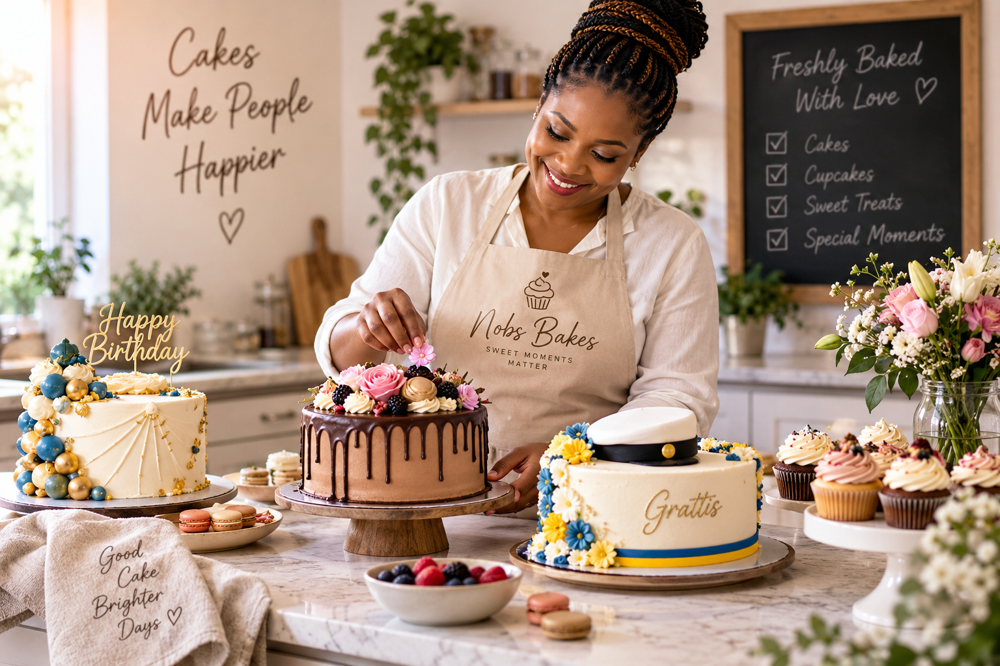

Mina Favoritbakverk
Nobs Bakes är ett litet bageri med fokus på hembakade tårtor och cupcakes. Här har jag samlat några av mina favoritbakverk för att ge dig inspiration och hjälpa dig att hitta något som passar just ditt firande. Du kan enkelt jämföra olika bakverk, se deras svårighetsgrad och upptäcka vilka tillfällen de passar bäst för.

Jämför mina favoritbakverk
| Bakverk | Svårighetsgrad | Gräddningstid | Tillfällen |
|---|---|---|---|
| Chokladtårta med dropp | Medel | 30 minuter | Födelsedagar, festliga tillfällen |
| Blå och gul festtårta | Avancerad | 45 minuter | Jubileum, bröllop, speciella firanden |
| Studenttårta | Lätt | 25 minuter | Studentfirande, examen, avslutning |
| Djungeltårta | Avancerad | 50 minuter | Party, barnkalas, speciella firanden |
| Bröllopstårta | Avancerad | 200 minuter | Jubileum, bröllop, speciella firanden |
Läs mer om bakning
Här, Baka.se, hittar fler tips och trick för att baka de bästa bakverken. Läs om olika tekniker, smakkomponenter och dekorationsidéer.